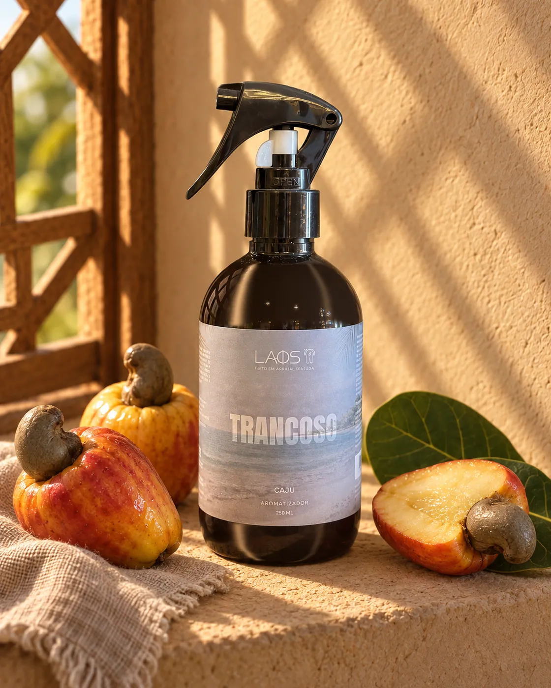

Guia · Destinos
Aromas com nome de lugar
Arraial d'Ajuda, Trancoso, Caraíva, Porto Seguro e destinos do mundo: como nasce um aroma com nome de lugar e como escolher o seu.

Na LAOS, muitos aromas levam o nome de um lugar. Arraial d'Ajuda, Trancoso, Caraíva, Porto Seguro. E, mais longe, Kyoto, Capri, Paris. A ideia é simples: leve um lugar para casa. Um aroma que lembra uma viagem feita, uma viagem sonhada ou a vila onde ficam as nossas lojas.
Como ler um aroma com nome de lugar
O nome é a inspiração. Cada aroma é uma leitura, em perfume, de alguma coisa daquele lugar: uma fruta, uma paisagem, um clima. Ele não pretende reproduzir o cheiro exato do lugar e não indica de onde vêm os ingredientes. Pense nele como um cartão-postal para o nariz.
Para escolher, olhe duas coisas na página de cada produto: as notas, que dizem o que você vai sentir, e o formato, que diz como o aroma vai perfumar a sua casa.
A Costa do Descobrimento
É daqui que tudo parte. As nossas lojas ficam em Arraial d'Ajuda, e os primeiros destinos do nosso atlas são os vizinhos de estrada e de praia.
Arraial d'Ajuda: caramelo e limão
A vila no alto da falésia, com a igrejinha branca na praça e a ladeira que desce até o mar. É aqui que ficam as nossas duas lojas, na Praça da Igreja e na Rua do Mucugê. O aroma junta o doce do caramelo ao limão. É o destino com mais formatos: vela de 110 ml, home spray de 250 ml, difusor de varetas de 350 ml e aromatizador de 1 litro. Veja todos em aromas de Arraial d'Ajuda.
Trancoso: caju
O Quadrado: um gramado comprido entre casinhas coloridas, com a igreja de São João Batista de frente para o mar. O aroma tem a nota de caju, fruta do Nordeste. Em vela e em home spray, em aromas de Trancoso.
Caraíva: pomelo
A vila sem carros entre o rio e o mar, onde se chega de canoa. O aroma é de pomelo, um cítrico parente da toranja. Em vela e em home spray, em aromas de Caraíva.
Porto Seguro: abacaxi
A cidade da Costa do Descobrimento, com o centro histórico no alto e a orla de praias logo abaixo. O aroma tem a nota de abacaxi. Em vela e em home spray, em aromas de Porto Seguro.
Pelo Brasil
O atlas também passa por outras paisagens do país. A Vela Charme Carioca leva o Rio de Janeiro do fim de tarde na praia. Nos aromatizadores de 1 litro, há o Encanto Nordestino, o Madero Noites Paulistas, a Elegância Gaúcha e a Serenidade Amazônica. Nomes que lembram o sol forte do Nordeste, a cidade acesa depois da meia-noite, o pampa e a floresta.
Pelo mundo
Alguns aromas atravessam o oceano. Os que têm notas informadas:
- Kyoto: templos de madeira e bambuzais. O home spray Serenidade de Kyoto tem notas de bergamota e cedro, e também existe em difusor de varetas.
- Capri: a ilha de falésias e mar azul. O Verão do Capri reúne melão, cítricos, figo, flores brancas, almíscar branco, âmbar e madeiras claras.
- Paris: boulevards e cafés de esquina. O Notas de Paris traz lavanda, jasmim, cedro, musk e baunilha.
Completam a viagem os home sprays Segredos do Cairo, Elegância de Dubai, Mistério de Praga, Noites de Moscou e Charme Miami. Veja o mapa inteiro no atlas de aromas.
Como escolher o seu destino
- Pela memória. Esteve em Trancoso? Em Caraíva? O nome do lugar é um bom começo.
- Pelas notas. Se você gosta de cítricos, Arraial d'Ajuda e Caraíva são o caminho. Se prefere fruta madura, Trancoso e Porto Seguro.
- Pelo formato. Vela para um momento, home spray para perfumar na hora, difusor para ter o aroma o dia inteiro. Veja o guia qual aroma para cada ambiente.
Uma lembrança que continua em casa
Quem passa por Arraial d'Ajuda pode sentir os aromas na loja antes de escolher. Uma vela ou um home spray com o nome do lugar cabe na mala e vira uma lembrança da viagem que se acende em casa. E, quando acabar, não precisa voltar à Bahia para repor: encontre o mesmo aroma aqui no site e faça o pedido pelo WhatsApp. Enviamos para todo o Brasil.
Para presentear, os aromas com nome de lugar também aparecem na página de presentes. E, se você está pela vila, venha sentir de perto nas nossas lojas em Arraial d'Ajuda.